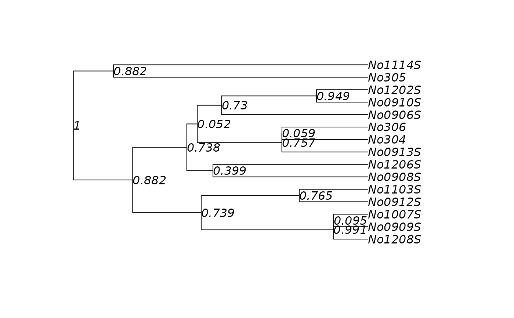
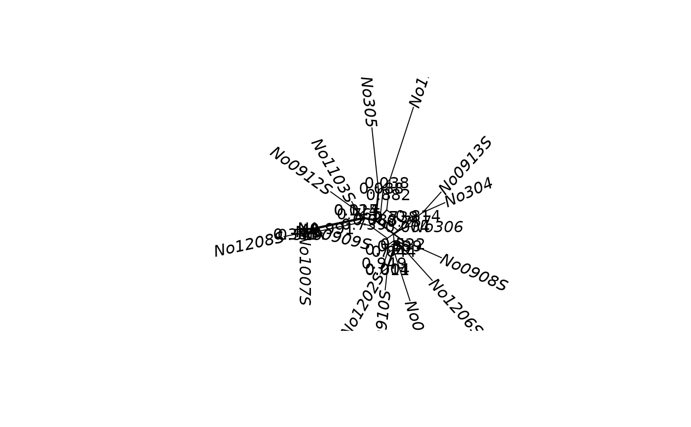

Add support values to a splits, phylo or networx
object.
Usage
addConfidences(x, y, ...)
# S3 method for class 'phylo'
addConfidences(x, y, rooted = FALSE, ...)
presenceAbsence(x, y)
createLabel(x, y, label_y, type = "edge", nomatch = NA)Arguments
- x
an object of class
splits,phyloornetworx- y
an object of class
splits,phylo,multiPhyloornetworx- ...
Further arguments passed to or from other methods.
- rooted
logial, if FALSE bipartitions are considered, if TRUE clades.
- label_y
label of y matched on x. Will be usually of length(as.splits(x)).
- type
should labels returned for edges (in
networx) or splits.- nomatch
default value if no match between x and y is found.
References
Schliep, K., Potts, A. J., Morrison, D. A. and Grimm, G. W. (2017), Intertwining phylogenetic trees and networks. Methods Ecol Evol.8, 1212–1220. doi:10.1111/2041-210X.12760
Author
Klaus Schliep klaus.schliep@gmail.com
Examples
data(woodmouse)
woodmouse <- phyDat(woodmouse)
tmpfile <- normalizePath(system.file(
"extdata/trees/RAxML_bootstrap.woodmouse", package="phangorn"))
boot_trees <- read.tree(tmpfile)
dm <- dist.ml(woodmouse)
tree <- upgma(dm)
nnet <- neighborNet(dm)
tree <- addConfidences(tree, boot_trees)
nnet <- addConfidences(nnet, boot_trees)
plot(tree, show.node.label=TRUE)

plot(nnet, show.edge.label=TRUE)
